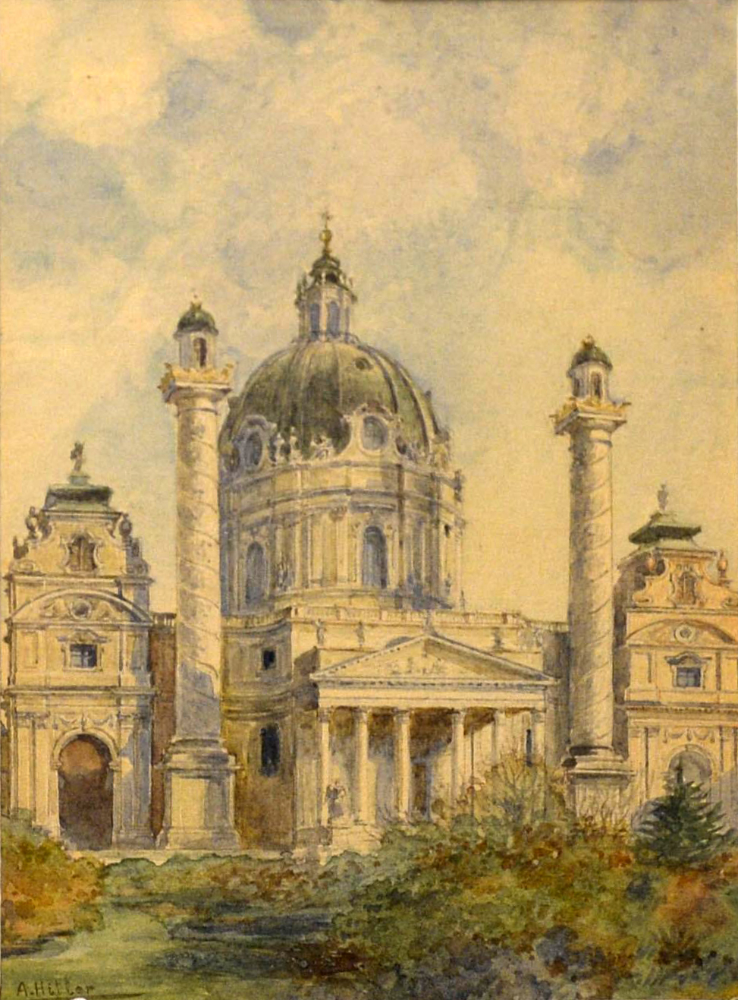
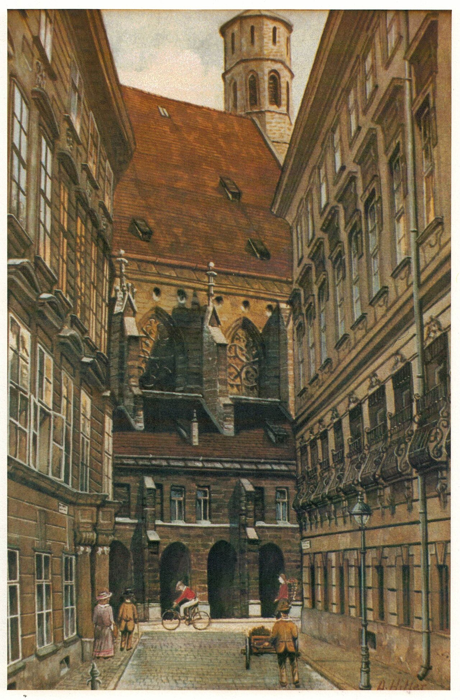
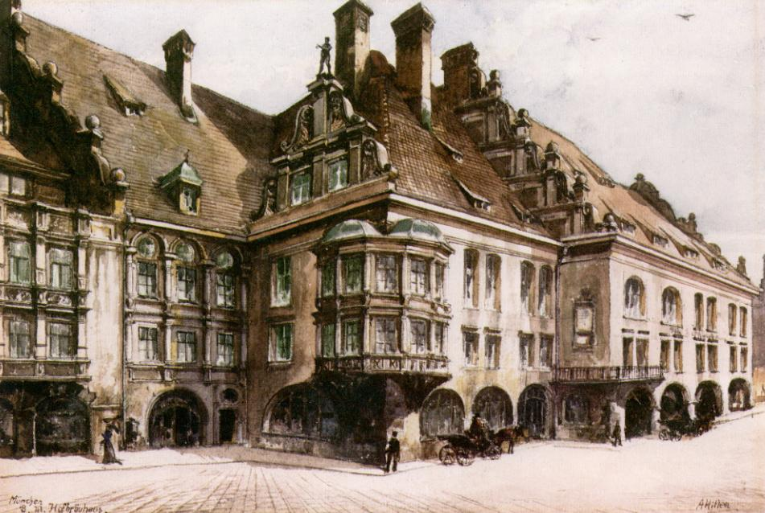
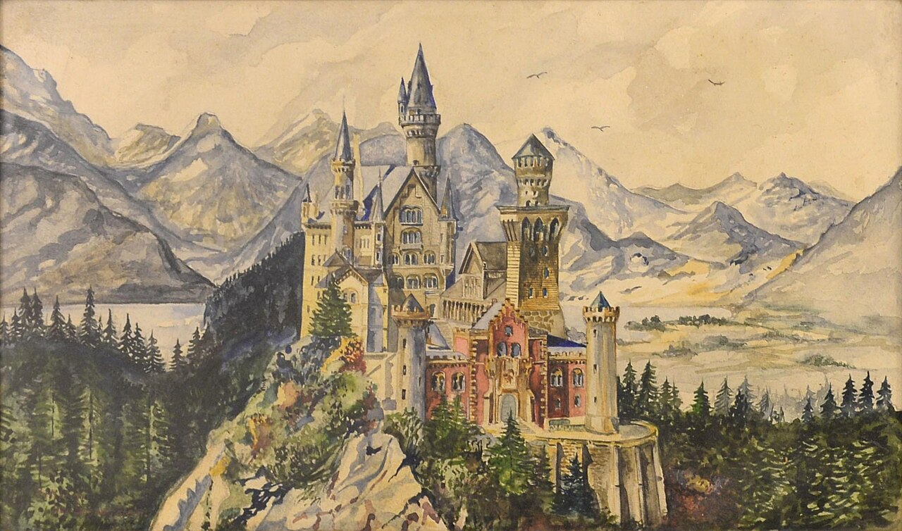
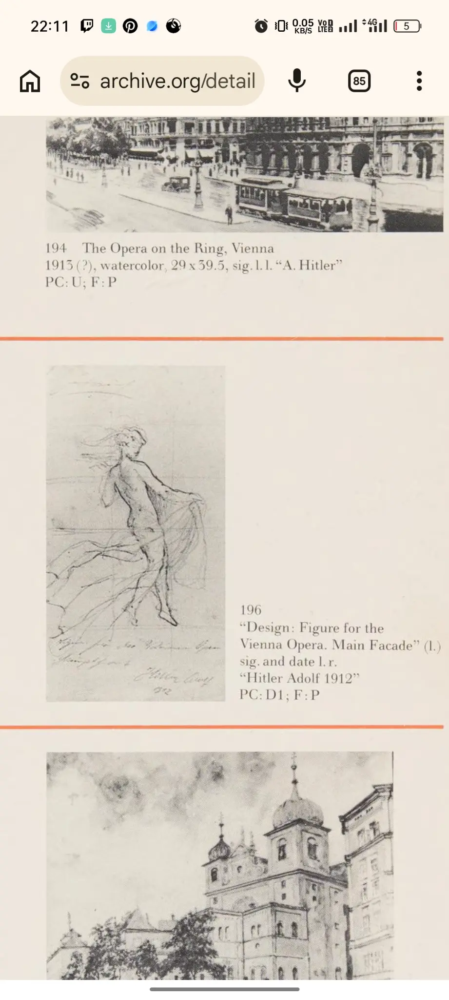
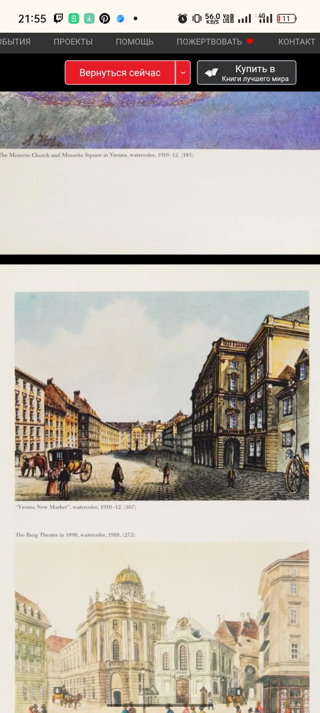
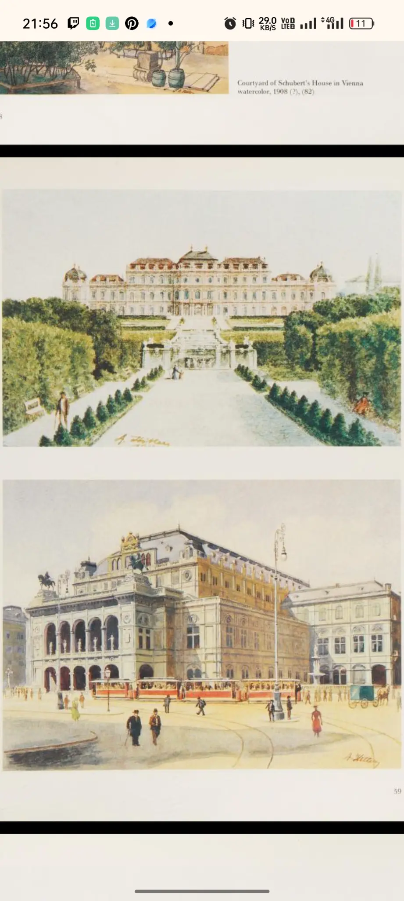

Внутренний двор
старой резиденции
Мюнхен. Работа, приписываемая Адольфу Гитлеру; в описании Commons указана как акварель, находящаяся в коллекции U.S. Army Center of Military History.
Карточка объекта ↗Исторический каталог · 1901—1942
Архив из 198 материалов: акварели, рисунки и страницы каталога 1984 года, прочитанные критически и сопоставленные с более поздними сообщениями об атрибуции и подделках.
Исследовать каталог↘В галерее собраны изображения из Wikimedia Commons с отдельными карточками источников. Пока полный текст книги 1984 года на Archive.org закрыт, подписи ниже основаны на доступных каталожных данных и не выдаются за прямые цитаты из книги.
Мюнхен. Работа, приписываемая Адольфу Гитлеру; в описании Commons указана как акварель, находящаяся в коллекции U.S. Army Center of Military History.
Карточка объекта ↗
Поздняя работа, опубликованная как автопортрет. В каталоге она показана только как исторический объект, без художественной оценки или оправдания политического наследия автора.
Карточка объекта ↗
Архитектурный мотив венского периода. Храм и его геометричная перспектива относятся к типу городских сюжетов, которые часто связывают с ранними акварелями и открытками.
Источник и лицензия ↗
Ещё один венский архитектурный этюд: фасад, вертикали и свободное пространство вокруг здания становятся главным содержанием изображения.
Источник и лицензия ↗
Городской мотив, связанный с архитектурными видами Мюнхена. Датировка и атрибуция должны проверяться по карточке Commons и книжному каталогу.
Источник и лицензия ↗
Архитектура в ландшафте: замок помещён в широкую панораму, где объект становится центром романтизированного вида.
Источник и лицензия ↗
В книге работа описана как акварель размером 29 × 39,5; подпись внизу слева — «A. Hitler». Рядом на странице находится проект фигуры для главного фасада Венской оперы, датированный 1912 годом.
Страница книги ↗
На странице книги видны подписи к трём городским видам: Minorite Church and Minorite Square in Vienna (1910–12), Vienna New Market (1910–12) и The Burg Theater in 1890 (1910).
Страница книги ↗
Подпись книги: Courtyard of Schubert’s House in Vienna, watercolor, 1908 (?). Соседние изображения продолжают ряд архитектурных видов Вены.
Страница книги ↗Интерактивная карта связывает книжные подписи с современными координатами исторических мест. Маркер показывает место, а карточка — какую работу или группу работ с ним связывает каталог.
Полный архив присланных материалов. Основной зал показывает избранные пластины; здесь сохранены все 198 файлов, включая страницы книги и изображения работ.
По этому запросу материалов не найдено.
Ранние венские работы связаны с небольшими видами улиц, зданий и пейзажей. В каталожной традиции их важно рассматривать как коммерческое ремесло и работу с мотивами, а не как доказательство академического признания.
В архитектурных эскизах внимание сосредоточено на силуэте, фасаде и перспективе. Такие изображения позволяют обсуждать привычку копировать и стилизовать виды, но не заменяют атрибутику конкретного произведения.
Венская академия изобразительных искусств дважды отклонила кандидатуру Гитлера. По опубликованным историческим очеркам, его рисунки сочли неудовлетворительными.
В Вене он продавал небольшие акварели и виды архитектуры, часто работая с мотивами, скопированными с открыток. Коммерческий успех был ограниченным.
После Первой мировой войны художественная практика прекратилась. Сохранившиеся и приписываемые ему работы стали объектами споров, торгов и подделок.
Такой каталог не отделяет изображения от истории их автора. Он показывает, как музейные предметы получают смысл через контекст, provenance и проверку подлинности.
Основной библиографический ориентир проекта — книга Adolf Hitler, the unknown artist, издание B.F. Price, 1984. Запись Internet Archive указывает, что это перевод немецкого каталога Adolf Hitler als Maler und Zeichner; доступ к полному тексту Archive.org ограничен; страницы, представленные в архиве сайта, загружены пользователем отдельно и обозначены как документальные материалы, а не как открытая копия всей книги.
Этот проект не прославляет Адольфа Гитлера, нацистскую идеологию или связанные с ними преступления. Он использует художественные объекты как повод говорить об исторической памяти, неустойчивой атрибуции и механике культурного мифа.
Формулировка «приписывается» используется намеренно: независимые сообщения о торгах и конфискациях показывают, что часть подобных работ становилась предметом расследований о возможной подделке.